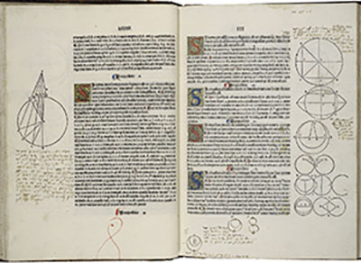
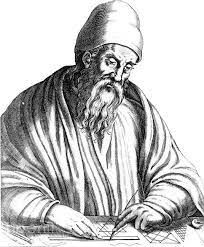

제1권은 삼각형·평행선·면적, 제2권은 직사각형·정사각형 면적의 변형, 제3권은 원, 제4권은 내접(內接) 및 외접다각형(外接多角形), 제5권은 비례론(比例論), 제6권은 닮은꼴(이상은 평면기하학), 제7∼9권은 유리수론(有理數論) ·급수 ·비례수, 제10권은 무리수론(無理數論), 제11∼13권은 입체기하학을 다루고 있다.
이 책은 유클리드 이전의 그리스 수학자들의 연구를 정리 ·완성 ·개량한 것으로서, 유클리드 자신의 창의는 별로 없다고 하는데, 그 후 근세에 이르기까지 교과서로 사용되었다.
 